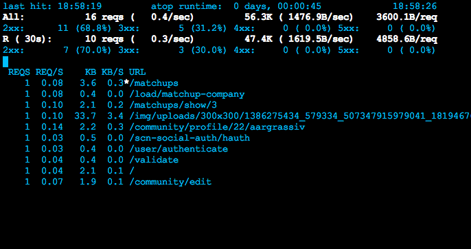

(点击上方蓝字，可快速关注我们)

问:1 如何查看当前的Linux服务器的运行级别？
答: ‘who -r’ 和 ‘runlevel’ 命令可以用来查看当前的Linux服务器的运行级别。
问:2 如何查看Linux的默认网关？
答: 用 “route -n” 和 “netstat -nr” 命令，我们可以查看默认网关。除了默认的网关信息，这两个命令还可以显示当前的路由表。
问:3 如何在Linux上重建初始化内存盘镜像文件？
答: 在CentOS 5.X / RHEL 5.X中，可以用mkinitrd命令来创建初始化内存盘文件，举例如下：
# mkinitrd -f -v /boot/initrd-$(uname -r).img $(uname -r)
如果你想要给特定的内核版本创建初始化内存盘，你就用所需的内核名替换掉 ‘uname -r’ 。
在CentOS 6.X / RHEL 6.X中，则用dracut命令来创建初始化内存盘文件，举例如下：
# dracut -f
以上命令能给当前的系统版本创建初始化内存盘，给特定的内核版本重建初始化内存盘文件则使用以下命令：
# dracut -f initramfs-2.x.xx-xx.el6.x86_64.img 2.x.xx-xx.el6.x86_64
问:4 cpio命令是什么？
答: cpio就是复制入和复制出的意思。cpio可以向一个归档文件（或单个文件）复制文件、列表，还可以从中提取文件。
问:5 patch命令是什么？如何使用？
答: 顾名思义，patch命令就是用来将修改（或补丁）写进文本文件里。patch命令通常是接收diff的输出并把文件的旧版本转换为新版本。举个例子，Linux内核源代码由百万行代码文件构成，所以无论何时，任何代码贡献者贡献出代码，只需发送改动的部分而不是整个源代码，然后接收者用patch命令将改动写进原始的源代码里。
创建一个diff文件给patch使用，
# diff -Naur old_file new_file > diff_file
旧文件和新文件要么都是单个的文件要么都是包含文件的目录，-r参数支持目录树递归。
一旦diff文件创建好，我们就能在旧的文件上打上补丁，把它变成新文件：
# patch < diff_file
问:6 aspell有什么用 ?
答: 顾名思义，aspell就是Linux操作系统上的一款交互式拼写检查器。aspell命令继任了更早的一个名为ispell的程序，并且作为一款免费替代品 ，最重要的是它非常好用。当aspell程序主要被其它一些需要拼写检查能力的程序所使用的时候，在命令行中作为一个独立运行的工具的它也能十分有效。
问:7 如何从命令行查看域SPF记录？
答: 我们可以用dig命令来查看域SPF记录。举例如下：
linuxtechi@localhost:~$ dig -t TXT google.com
问:8 如何识别Linux系统中指定文件(/etc/fstab)的关联包？
答:
# rpm -qf /etc/fstab
以上命令能列出提供“/etc/fstab”这个文件的包。
问:9 哪条命令用来查看bond0的状态？
答:
cat /proc/net/bonding/bond0
问:10 Linux系统中的/proc文件系统有什么用？
答: /proc文件系统是一个基于内存的文件系统，其维护着关于当前正在运行的内核状态信息，其中包括CPU、内存、分区划分、I/O地址、直接内存访问通道和正在运行的进程。这个文件系统所代表的并不是各种实际存储信息的文件，它们指向的是内存里的信息。/proc文件系统是由系统自动维护的。
问:11 如何在/usr目录下找出大小超过10MB的文件？
答:
# find /usr -size +10M
问:12 如何在/home目录下找出120天之前被修改过的文件？
答:
# find /home -mtime +120
问:13 如何在/var目录下找出90天之内未被访问过的文件？
答:
# find /var \! -atime -90
问:14 在整个目录树下查找文件“core”，如发现则无需提示直接删除它们。
答:
# find / -name core -exec rm {} \;
问:15 strings命令有什么作用？
答: strings命令用来提取和显示非文本文件中的文本字符串。（LCTT 译注：当用来分析你系统上莫名其妙出现的二进制程序时，可以从中找到可疑的文件访问，对于追查入侵有用处）
问:16 tee 过滤器有什么作用 ?
答: tee 过滤器用来向多个目标发送输出内容。如果用于管道的话，它可以将输出复制一份到一个文件，并复制另外一份到屏幕上（或一些其它程序）。
linuxtechi@localhost:~$ ll /etc | nl | tee /tmp/ll.out
在以上例子中，从ll输出可以捕获到 /tmp/ll.out 文件中，并且同样在屏幕上显示了出来。
问:17 export PS1 = ”$LOGNAME@hostname:\$PWD: 这条命令是在做什么？
答: 这条export命令会更改登录提示符来显示用户名、本机名和当前工作目录。
问:18 ll | awk ‘{print $3,”owns”,$9}’ 这条命令是在做什么？
答: 这条ll命令会显示这些文件的文件名和它们的拥有者。
问:19 :Linux中的at命令有什么用？
答: at命令用来安排一个程序在未来的做一次一次性执行。所有提交的任务都被放在 /var/spool/at 目录下并且到了执行时间的时候通过atd守护进程来执行。
问:20 linux中lspci命令的作用是什么？
答: lspci命令用来显示你的系统上PCI总线和附加设备的信息。指定-v，-vv或-vvv来获取越来越详细的输出，加上-r参数的话，命令的输出则会更具有易读性。
原文出处： Pradeep Kumar
译文出处：Linux中国 - ZTinoZ
译文链接：http://linux.cn/article-4790-1.html


![]()